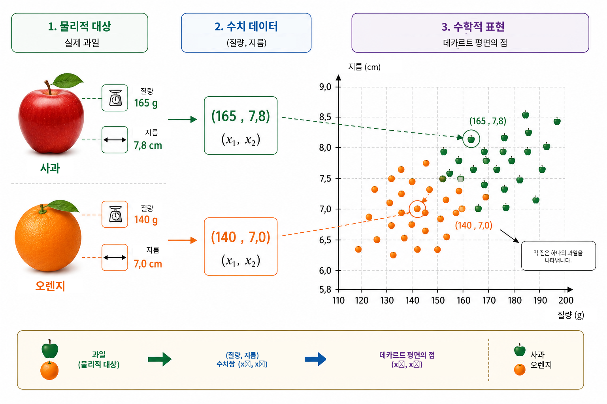
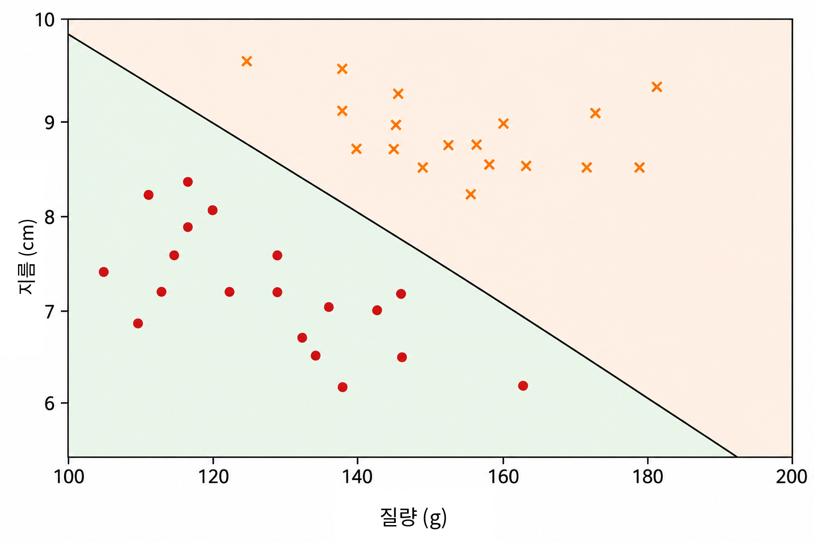
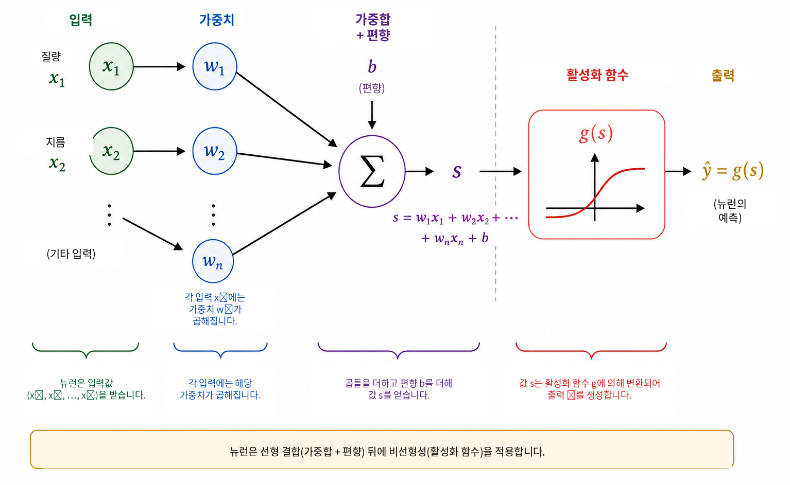
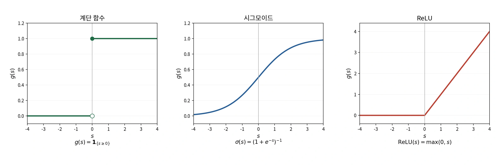
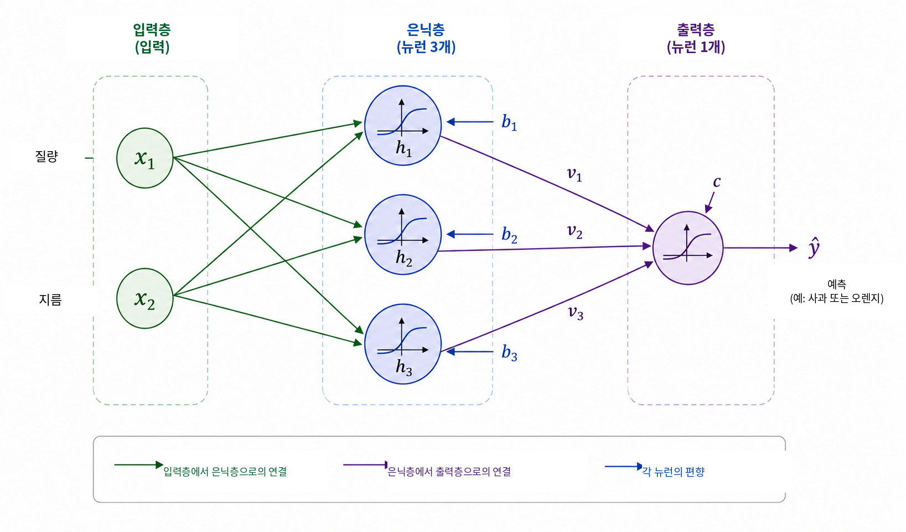
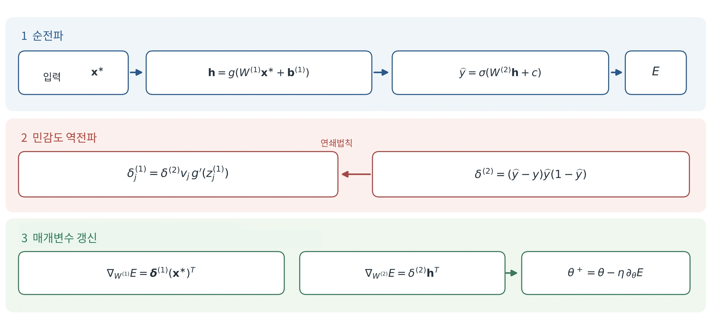
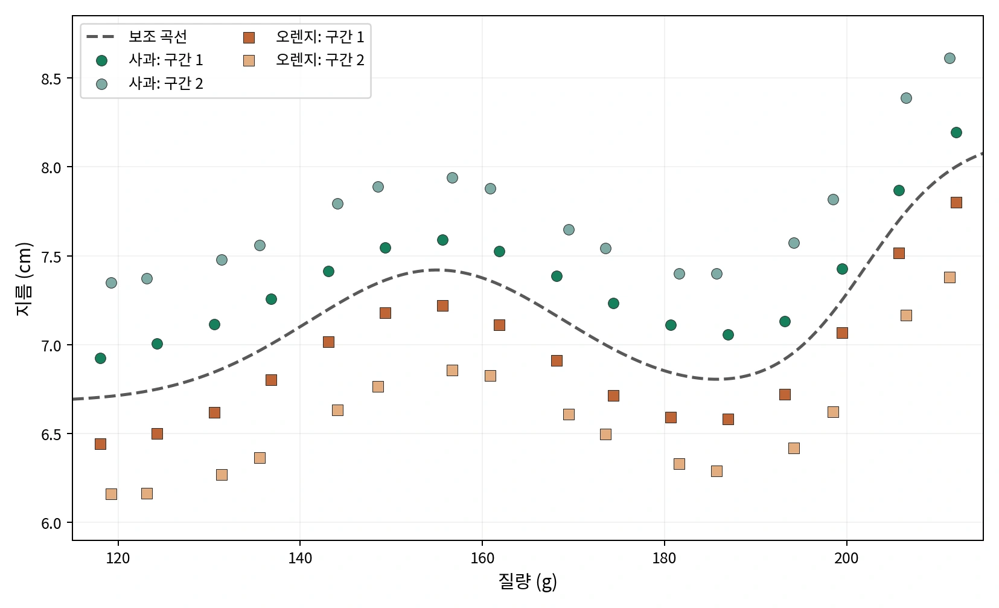
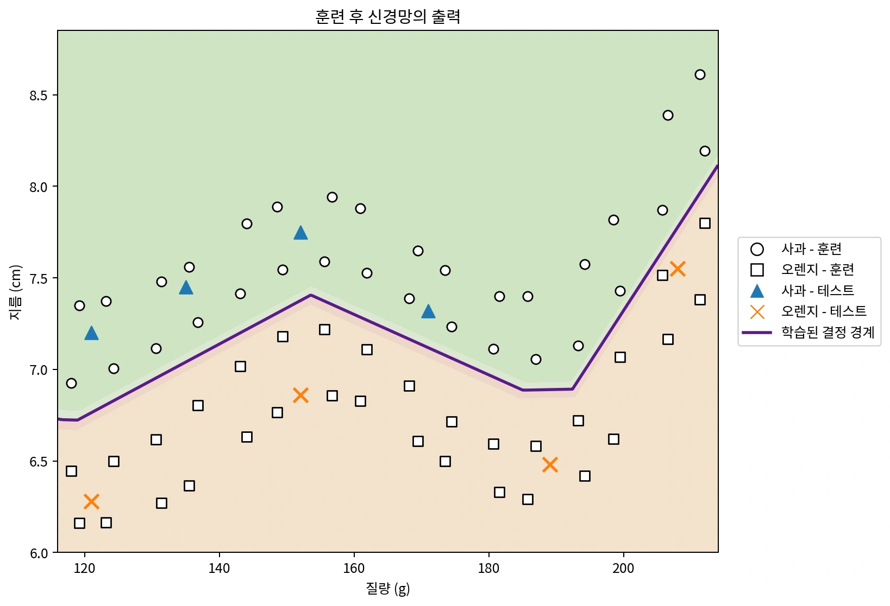

컴퓨터는 언제 학습할 수 있는가?
일상에서 우리는 거의 의식하지 않은 채 분류 판단을 내린다. 과일을 보면 사과인지 오렌지인지 빠르게 구별하고, 휴대전화에 메시지가 도착하면 정상적인 대화와 원치 않는 광고를 구분한다. 의료 분석에서는 여러 측정값을 결합하여 판단을 지원할 수 있고, 금융기관에서는 신용을 제공하기 전에 여러 정보를 평가한다. 이 모든 예에서는 여러 특성을 함께 고려하여 하나의 답을 만든다.
많은 전통적인 컴퓨터 프로그램에서는 이 답을 만들어 내는 규칙을 프로그래머가 명시적으로 작성한다. 규칙이 알려져 있고 명확히 표현할 수 있을 때는 잘 작동한다. 그러나 데이터의 변동성이 크거나 좋은 판단에 필요한 모든 조건을 미리 기술하기 어려울 때는 효과가 떨어진다. 따라서 다음과 같은 자연스러운 질문이 생긴다.
판단 규칙을 미리 주는 대신, 예제로부터 그 규칙을 학습하는 프로그램을 만들 수 있을까?
이는 데이터로부터 모델을 적합하는 방법을 다루는 인공지능의 한 분야인 기계학습의 핵심 아이디어 가운데 하나이다 . 지도학습 문제에서 알고리즘은 정답이 주어진 예제를 입력받고, 학습에 사용하지 않은 사례에도 유용한 예측을 할 수 있는 모델을 찾는다. 이를 위해 개발된 많은 모델 중 인공 신경망은 영상 인식, 언어 처리, 신호 분석, 시계열 예측 등의 응용에서 중요한 역할을 하고 있다 .
신경망을 수학, 계산, 학교 교육을 연결하는 주제로 활용하는 시도는 Batista와 Martins가 Professor de Matemática Online에서 이미 논의하였다 . 그들은 교사 교육, Python, 숫자 인식을 결합한 활동을 제시한다. 본 논문은 이를 보완하는 다른 경로를 따른다. 주요 목적은 작은 신경망 내부의 수학을 드러내고, 해석기하에서 시작하여 기울기 계산과 역전파의 직접 구현까지 단계적으로 진행하는 것이다.
현대의 응용은 매우 정교해 보이지만, 신경망의 수학적 핵심은 비교적 익숙한 개념으로 소개할 수 있다. 기본적으로 신경망은 데이터에 따라 매개변수가 조정되는 함수들의 합성이다. 먼저 단순한 기하학 문제에서 출발하여 분리 직선을 인공 뉴런으로 다시 해석하고, 여러 뉴런을 연결하고, 활성화 함수의 역할을 살펴보고, 도함수를 이용해 네트워크의 매개변수를 자동으로 조정하는 방법을 설명한다. 그런 다음 수식과 코드 사이의 직접적인 대응을 유지한 채 완전한 소규모 예제를 Python으로 구현한다.
문제를 수학적으로 표현하기
신경망의 작동 방식을 이해하기 위해 의도적으로 단순한 문제, 즉 사과와 오렌지를 구별하는 문제에서 시작한다. 과일에는 색, 질량, 지름, 질감, 향처럼 분류에 도움이 될 수 있는 많은 특성이 있다. 그러나 첫 번째 수학 모델에 이 모든 복잡성을 포함할 필요는 없다. 여기서는 쉽게 측정할 수 있는 두 양만 사용한다. 질량은 그램, 지름은 센티미터 단위로 측정한다.
따라서 각 과일을 순서쌍 \[(x_1,x_2),\] 으로 나타내고, \[x_1=\text{질량} \qquad\text{및}\qquad x_2=\text{지름}\] 로 둔다.
예를 들어 \((155,\;7.2)\)는 질량이 \(155\) g이고 지름이 \(7.2\) cm인 과일을 나타낸다. 물리적 대상을 두 개의 수치 측정값으로 바꾸면 각 과일을 데카르트 평면의 한 점과 대응시킬 수 있다. 첫 번째 좌표는 질량이고 두 번째 좌표는 지름이다. 그림 1는 가상의 사과와 오렌지 집합에 대해 이러한 표현을 보여 준다.

이 변환은 문제를 바라보는 방식을 바꾼다. 사과나 오렌지를 직접 어떻게 인식할 것인지 묻는 대신, 두 클래스에 속한 점들을 평면에서 어떻게 분리할 수 있는지를 묻는 기하학적 문제로 바꿀 수 있다. 이러한 관점의 전환은 기계학습에서 본질적이다. 이미지, 텍스트, 소리, 실험 신호는 모두 알고리즘이 처리하기 전에 수치 표현으로 변환되어야 한다. 이 예에서 각 대상은 두 좌표만 가지지만, 실제 응용의 표현은 수백, 수천, 심지어 수백만 개의 성분을 포함할 수 있다. 원리는 같다. 각 예제를 수의 집합과 대응시키고, 모델은 그 표현을 원하는 답으로 보내는 규칙을 찾는다.
먼저 가장 단순한 기하학적 규칙에서 시작하여, 하나의 직선만으로 사과 점들과 오렌지 점들을 충분히 분리할 수 있는지 살펴본다.
분류기로서의 직선
각 과일을 데카르트 평면의 점으로 나타내면 분류는 기하학 문제가 된다. 하나의 직선으로 사과와 오렌지를 나눌 수 있을까? 이 질문은 선형 분류기라고 불리는 중요한 기계학습 방법군의 기본 아이디어를 담고 있다.
그림 2처럼 데이터 점 구름을 가로지르는 직선을 생각하자. 이 직선은 평면을 두 반평면으로 나눈다. 사과 점의 대부분이 한쪽에 있고 오렌지 점의 대부분이 다른 쪽에 있다면, 새로운 과일이 직선의 어느 쪽에 있는지를 분류 규칙으로 사용할 수 있다. 질량과 지름을 측정하고 과일을 점으로 나타낸 뒤, 그 점이 어느 반평면에 있는지를 확인하면 된다.

데카르트 평면 \((x_1,x_2)\)에서 직선은 \[w_1x_1+w_2x_2+b=0, \qquad (w_1,w_2)\neq(0,0)\] 로 쓸 수 있다.
벡터 \((w_1,w_2)\)는 직선에 수직이며 그 방향을 결정한다. 한편 매개변수 \(b\)는 직선의 위치에 관여한다. 이 표현에는 약간의 중복성이 있다. \(w_1,w_2,b\)를 같은 0이 아닌 상수로 곱해도 같은 직선이 된다. 따라서 경계를 기술하는 매개변수는 유일하지 않다. 또한 수치적 해석은 변수의 척도에도 의존한다. 질량은 그램, 지름은 센티미터로 측정되므로 단위 차이를 고려하지 않고 \(w_1\)과 \(w_2\)의 수치 크기를 직접 비교해서는 안 된다.
직선의 방정식 자체를 이용하면 점이 경계의 어느 쪽에 있는지 쉽게 판정할 수 있다. 점수를 \[s(x_1,x_2)=w_1x_1+w_2x_2+b\] 로 정의하자.
\(s(x_1,x_2)=0\)이면 점은 직선 위에 있다. \(s(x_1,x_2)>0\)이면 한 반평면에 있고, \(s(x_1,x_2)<0\)이면 다른 반평면에 있다. 양의 점수를 사과, 음의 점수를 오렌지에 대응시키면 규칙은 \[\begin{cases} s(x_1,x_2)\geq 0 & \Longrightarrow \text{사과},\\ s(x_1,x_2)<0 & \Longrightarrow \text{오렌지} \end{cases}\] 가 된다.
예를 들어 경계가 \[w_1=\frac{1}{10}, \qquad w_2=2, \qquad b=-30\] 로 정해졌다고 하자. 질량 \(160\) g, 지름 \(7.8\) cm인 과일에 대해 \[\begin{aligned} s &=\frac{1}{10}\times160+2\times7.8-30\\ &=16+15.6-30\\ &=1.6 \end{aligned}\] 이다. 점수가 양수이므로 이 점은 사과에 대응시킨 반평면에 있다. 따라서 이 분류기는 이 과일을 사과로 판정한다.
\(w_1,w_2,b\)를 어떻게 선택하든 좋은 분류가 되는 것은 아니다. 두 집단을 잘 분리하지 못하는 직선도 있고 오류가 적은 직선도 있다. 학습 문제란 라벨이 알려진 예제를 사용하여 모델의 오차를 나타내는 양을 작게 만드는 매개변수 값을 찾는 것이다. 직선의 위치를 직접 프로그래밍하는 대신, 알고리즘이 데이터로부터 계수를 조정하도록 하고자 한다.
클래스가 대략 선형 분리 가능하다면 하나의 직선만으로도 충분히 잘 작동할 수 있다. 그러나 더 복잡한 데이터 집합에는 비선형 경계가 필요하다. 그 한계를 다루기 전에, 방금 만든 분류기를 기본 계산 단위인 인공 뉴런으로 다시 해석해 보자.
인공 뉴런
앞 절에서는 \[s=w_1x_1+w_2x_2+b\] 라는 식을 이용해 과일이 직선의 어느 쪽에 있는지를 결정했다. 같은 식은 인공 뉴런이 수행하는 계산의 첫 단계로 볼 수 있다. 뉴런은 수치 입력을 받아 가중치와 편향으로 결합한 뒤, 수학적 함수를 적용하여 출력을 얻는다.
이 예에서 입력은 질량 \(x_1\)과 지름 \(x_2\)이다. 각 입력에는 가중치라는 매개변수가 곱해지고, 그 곱들을 편향이라는 상수항 \(b\)와 함께 더한다. 그림 3은 이 계산을 도식적으로 보여 준다.

가중치는 입력의 변화가 점수에 어떤 영향을 주는지를 결정한다. \(x_2\)와 다른 모든 양을 고정하면 \(x_1\)의 변화 \(\Delta x_1\)은 \(s\)를 \(w_1\Delta x_1\)만큼 변화시킨다. 마찬가지로 \(x_2\)의 변화 \(\Delta x_2\)는 점수를 \(w_2\Delta x_2\)만큼 바꾼다. 부호도 중요하다. 양의 가중치에서는 입력이 증가하면 점수도 증가하고, 음의 가중치에서는 반대 효과가 난다. 다만 서로 다른 변수가 다른 단위나 척도를 가지면 이 해석에는 주의가 필요하다. 그래서 실제 구현에서는 학습 전에 입력 데이터를 정규화하거나 표준화하는 경우가 많다.
편향 \(b\)는 아핀 변환의 상수항이다. 기하학적으로는 결정 경계를 평행 이동시키는 역할을 한다. \(b=0\)이면 \[w_1x_1+w_2x_2=0\] 라는 식 때문에 직선은 원점을 지나야 한다. 편향이 있으면 경계를 다른 위치로 옮길 수 있다. 다시 말해 \(x_1=x_2=0\)일 때 점수는 단순히 \(s=b\)이다.
점수가 반드시 뉴런의 최종 출력인 것은 아니다. 일반적으로 활성화 함수 \(g\)를 적용한다. \[\widehat{y}=g(s)=g\left(w_1x_1+w_2x_2+b\right).\] 따라서 계산은 두 단계로 이루어진다. \[\begin{aligned} s &= w_1x_1+w_2x_2+b,\\[4pt] \widehat{y} &= g(s). \end{aligned}\]
앞 절의 매개변수 값을 사용하면 \(s=1.6\)이다. 계단 함수 \[g(s)= \begin{cases} 1, & s\geq0,\\ 0, & s<0 \end{cases}\] 를 선택하면 \(\widehat{y}=g(1.6)=1\)이 된다. 여기서 채택한 규칙에 따르면 이 과일은 사과로 분류된다. 이 활성화 함수에서는 \(s\)가 0을 지날 때 판단이 바뀌므로 클래스 경계는 정확히 \[w_1x_1+w_2x_2+b=0\] 이다.
따라서 하나의 뉴런은 조정 가능한 매개변수를 가진 단순한 수학적 대상이다. 진정한 중요성은 많은 뉴런을 연결할 때 나타난다. 그러나 네트워크를 구성하기 전에 활성화 함수가 왜 필수적인지 이해할 필요가 있다.
왜 활성화 함수가 필요한가?
뉴런은 먼저 아핀 변환으로 점수를 계산한 다음 활성화 함수를 적용한다. 이 두 번째 단계는 신경망이 복잡한 관계를 표현하는 데 필수적이다. 이유를 보기 위해 활성화 함수를 전혀 사용하지 않는 네트워크를 생각하자. 그러면 모든 유닛은 \[y=w_1x_1+w_2x_2+b\] 형태가 된다.
1차원 예로 첫 번째 유닛이 \[h=ax+b\] 를 출력하고 두 번째 유닛이 \[y=ch+d\] 를 계산한다고 하자. 대입하면 \[y=c(ax+b)+d=acx+(cb+d)\] 가 되며, 여전히 \(x\)의 아핀 함수이다. 다차원에서도 마찬가지로 아핀 변환을 아무리 많이 합성해도 결과는 아핀 변환이다. 따라서 비선형 연산 없이 층을 늘려도 네트워크의 표현력은 본질적으로 증가하지 않으며, 전체 합성을 하나의 아핀 변환으로 대체할 수 있다.
활성화 함수는 이 제약을 깨뜨린다. 점수 \(s\)를 계산한 뒤 뉴런은 보통 비선형 사상 \[h=g(s)\] 을 적용한다. 이런 유닛을 여러 개 연결하면 결과 합성은 더 이상 하나의 아핀 변환으로 축약되지 않는다. 그 결과 네트워크는 더 복잡한 결정 경계를 만들 수 있다.
가장 단순한 활성화 함수는 계단 함수 \[g(s)= \begin{cases} 1, & s\geq0,\\ 0, & s<0 \end{cases}\] 이다. 이는 이진 판단을 제공하므로 분류의 개념을 이해하는 데 매우 유용하다. 그러나 도함수는 \(s\neq0\)에서 \(0\)이고, \(s=0\)에서는 정의되지 않는다. 경사 기반 학습에서는 매개변수를 어떻게 바꿀지 결정하기 위해 도함수를 사용하므로 계단 함수는 그 학습 메커니즘에 적합하지 않다.
한 가지 대안은 시그모이드 함수 \[\sigma(s)=\frac{1}{1+e^{-s}}\] 이다. 이 함수는 모든 실수를 \(0\)과 \(1\) 사이의 값으로 보낸다. \(s\)가 매우 음수이면 출력은 \(0\)에 가까워지고, 매우 양수이면 \(1\)에 가까워진다. 그 사이에서는 부드럽게 변한다. 시그모이드 함수는 모든 점에서 미분 가능하며 \[\sigma'(s)=\sigma(s)\bigl(1-\sigma(s)\bigr)\] 를 만족한다. 출력이 \(0\)과 \(1\) 사이이므로 이진 분류기의 출력층에서 자주 사용된다. 적절한 손실 함수를 사용하는 확률적 정식화에서는 출력을 “클래스 \(1\)일 확률”의 추정치로 해석할 수 있다. 다만 은닉층에서 시그모이드를 사용하면 입력의 절댓값이 큰 영역에서 도함수가 매우 작아져 깊은 네트워크에서 기울기 소실의 한 원인이 될 수 있다.
은닉층에서 널리 사용되는 활성화 함수가 ReLU(Rectified Linear Unit)이다. \[\mathrm{ReLU}(s)=\mathrm{max}(0,s) = \begin{cases} 0, & s<0,\\ s, & s\geq0. \end{cases}\] ReLU는 두 개의 선형 부분으로 이루어지지만 전체적으로는 선형이 아니다. 도함수는 \(s<0\)에서 \(0\), \(s>0\)에서 \(1\)이다. \(s=0\)에서는 보통의 도함수가 존재하지 않으므로 소프트웨어 구현에서는 기울기에 대해 어떤 약속을 정한다. 양의 입력에서는 \(s\)가 커져도 도함수가 작아지지 않으므로 시그모이드에서 나타나는 포화 문제의 한 형태를 피할 수 있다.
그림 4은 이 세 활성화 함수를 시각적으로 비교한다. 계단 함수의 급격한 점프, 시그모이드의 부드러운 전이, ReLU의 기울기 변화를 확인할 수 있다.

주요 성질을 다음 표에 요약한다.
| 함수 | 출력 | 도함수 | 대표적 용도 |
|---|---|---|---|
| 계단 | \(\{0,1\}\) | \(s\neq0\)에서 \(0\), \(s=0\)에서 정의되지 않음 | 역사적 모델, 교육용 예제 |
| 시그모이드 | \((0,1)\) | 모든 \(s\)에서 존재 | 이진 분류의 출력층 |
| ReLU | \([0,\infty)\) | \(s<0\)에서 \(0\), \(s>0\)에서 \(1\) | 은닉층 |
이 함수들은 세부적으로 다르지만 공통된 개념적 역할은 비선형성을 도입하는 것이다. 이 비선형성 덕분에 다음 절의 작은 네트워크는 하나의 직선으로 표현할 수 없는 관계를 나타낼 수 있다.
더 공부하고 싶은 독자에게 Haykin 은 신경망에 대한 고전적인 설명을 제공하고, Goodfellow, Bengio, Courville 은 활성화 함수와 심층 네트워크 학습을 더 넓은 맥락에서 다룬다. Nielsen의 무료 공개 교재 는 뉴런, 활성화 함수, 학습에 대한 직관을 기르는 데 특히 읽기 쉽다.
작은 신경망 구성하기
여기서는 두 개의 입력, 세 개의 뉴런을 가진 하나의 은닉층, 그리고 하나의 출력 뉴런으로 이루어진 네트워크를 생각한다. 입력은 계속해서 \[x_1=\text{질량}, \qquad x_2=\text{지름}\] 이며, 그림 5과 같이 두 입력 모두 각 은닉 뉴런으로 전달된다.

은닉층의 출력을 \(h_1,h_2,h_3\)라 하자. 각 뉴런은 같은 두 입력을 받지만 고유한 가중치와 편향을 가진다. \[\begin{aligned} h_1&=g\left(w_{11}x_1+w_{12}x_2+b_1\right),\\[4pt] h_2&=g\left(w_{21}x_1+w_{22}x_2+b_2\right),\\[4pt] h_3&=g\left(w_{31}x_1+w_{32}x_2+b_3\right). \end{aligned}\]
세 뉴런은 모두 같은 질량과 지름을 입력받지만 매개변수가 다르므로 서로 다른 응답을 만들 수 있다. 학습에서는 이러한 매개변수를 조정하여 중간 활성값이 분류에 유용하도록 한다.
다음으로 \(h_1,h_2,h_3\)를 출력 뉴런으로 보낸다. 출력 뉴런은 \[s_{\mathrm{out}}=v_1h_1+v_2h_2+v_3h_3+c\] 를 계산하고, \[\widehat{y}=g_{\mathrm{out}}\left(s_{\mathrm{out}}\right)\] 를 출력한다. 이 이진 분류 문제에서는 출력에 시그모이드 함수를 사용한다. \[\widehat{y}=\sigma\left(v_1h_1+v_2h_2+v_3h_3+c\right), \qquad 0<\widehat{y}<1.\]
사과를 \(y=1\), 오렌지를 \(y=0\)으로 두고 임계값을 \(0.5\)로 정하면 클래스 판정은 \[\widehat{y}\geq0.5 \Longrightarrow \text{사과}, \qquad \widehat{y}<0.5 \Longrightarrow \text{오렌지}\] 가 된다. 따라서 \(1\)에 가까운 값은 사과와 강하게 대응하고, \(0\)에 가까운 값은 오렌지와 대응한다. 앞서 언급했듯이 \(\widehat{y}\)를 수치적으로 확률로 해석하려면 모델과 학습 방법에 관한 추가 가정이 필요하다. 여기서 사용하는 분류 규칙에서는 \(\widehat{y}\)를 연속값 네트워크 출력으로 보면 충분하다.
이 구조의 핵심 특징은 중간 표현 \[(x_1,x_2) \longrightarrow (h_1,h_2,h_3) \longrightarrow \widehat{y}\] 에 있다. 네트워크는 두 특징을 입력받아 최종 답을 내기 전에 세 개의 새로운 양을 구성한다. 이 활성값들은 사람이 손으로 선택하는 것이 아니다. 가중치와 편향에 의존하므로 학습을 통해 매개변수가 바뀌면 활성값도 변한다.
이 네트워크는 작지만 이미 13개의 조정 가능한 매개변수를 가진다. 세 은닉 뉴런에는 \[3(2+1)=9\] 개의 매개변수가 있고, 출력 뉴런에는 \[3+1=4\] 개가 있다. 따라서 \[9+4=13\] 이다.
같은 계산은 행렬 표기로 쓰면 더 분명해진다. \[\mathbf{x}= \begin{bmatrix} x_1\\x_2 \end{bmatrix}, \qquad W^{(1)}= \begin{bmatrix} w_{11}&w_{12}\\ w_{21}&w_{22}\\ w_{31}&w_{32} \end{bmatrix}, \qquad \mathbf{b}^{(1)}= \begin{bmatrix} b_1\\b_2\\b_3 \end{bmatrix}.\] 그러면 은닉층은 간단히 \[\mathbf{h}=g\left(W^{(1)}\mathbf{x}+\mathbf{b}^{(1)}\right)\] 로 쓸 수 있다. 여기서 \(g\)는 성분별로 작용한다. 출력은 \[\widehat{y} = \sigma\left(W^{(2)}\mathbf{h}+b^{(2)}\right),\] 이며, 여기서 \[W^{(2)}= \begin{bmatrix} v_1&v_2&v_3 \end{bmatrix}\] 이다.
이 표기는 뒤의 Python 프로그램에 나타날 구조를 미리 보여 준다. 과일을 입력하고 \(\widehat{y}\)를 얻을 때까지 활성값을 차례로 계산하는 과정을 순전파(forward propagation) 또는 forward pass라고 한다. 남은 핵심 질문은 예측이 데이터에 맞도록 13개의 매개변수를 어떻게 자동으로 결정할 것인가이다.
신경망은 어떻게 학습하는가?
신경망의 가중치와 편향은 미리 주어지지 않으며, 정답 레이블이 있는 사례로부터 조정된다. 학습은 순전파, 손실 계산, 기울기 계산, 매개변수 갱신을 반복하는 과정이다(그림 6). 핵심은 연쇄법칙으로 각 가중치와 편향의 미소 변화가 손실에 미치는 영향을 계산할 수 있다는 점이다.
매개변수를 조정하려면 예측과 실제 정답의 차이를 수치로 측정해야 한다. 이를 손실 함수라 한다. 손실 함수는 각 예측에 벌점을 부여하므로 서로 다른 매개변수 선택을 비교할 수 있다. 단순히 오분류 수를 세는 것과 달리, 연속적인 손실은 정답에 가까운 예측과 먼 예측을 구별하고 학습 방향을 제시하는 도함수를 제공한다.
질량이 \(140\) g, 지름이 \(7.0\) cm인 오렌지(\(y=0\))를 생각하자. 신경망의 출력을 \(\widehat y\in(0,1)\)로 놓고, 한 사례에 대한 제곱 손실을 다음과 같이 사용한다.
\[\label{eq:perda} E=\frac12(\widehat y-y)^2.\]
여기서 \(y\)는 실제 클래스이고 \(\widehat y\)는 예측이다. 손실은 음수가 아니며 예측이 정답에 가까워질수록 작아진다. 예를 들어 오렌지에 대한 예측값 \(0.80\)과 \(0.60\)은 각각 \(E=0.32\)와 \(E=0.18\)을 낳는다. 임계값 \(0.5\)에서는 둘 다 사과로 오분류하지만, 손실은 더 가까운 두 번째 예측을 구별한다. 계수 \(1/2\)는 최솟값 위치를 바꾸지 않으면서 미분을 간결하게 한다.
한 과일이 아니라 여러 사례에서 학습하려면 각 손실을 결합해야 한다. \(N\)개 관측의 평균 손실을 정의하자.
\[\label{eq:perda_media} J=\frac1N\sum_{i=1}^{N}E_i.\]
평균 손실은 훈련 집합에서의 성능을 요약하며 매개변수를 조정하여 줄이려는 양이다. 그러나 \(J\)의 최소화가 새로운 데이터에서 좋은 예측을 보장하는 것은 아니다. 대수적으로 간단한 식 perda를 유도에 사용한 뒤 이진 교차 엔트로피의 기울기와 비교한다. 계산 실험 자체는 변경하지 않는다 [2, 3].

\(\theta\)가 가중치 또는 편향이면 \(\partial J/\partial\theta\)는 그 매개변수에 대한 평균 손실의 국소 민감도다. 경사하강법의 한 단계는 다음과 같다.
\[\label{eq:descida} \theta_{\mathrm{new}}=\theta_{\mathrm{old}}-\eta\frac{\partial J}{\partial\theta},\qquad \eta>0.\]
학습률 \(\eta\)는 갱신 크기를 결정한다. 지나치게 작으면 수렴이 느려지고, 지나치게 크면 진동하거나 발산할 수 있다. 다음 절의 코드처럼 관측 하나마다 갱신하면 \(\partial J/\partial\theta\) 대신 \(\partial E_i/\partial\theta\)를 사용한다. 여기서는 이러한 확률적 경사하강법(SGD)을 사용한다.
2–3–1 신경망에서의 연쇄법칙
그림 5의 신경망을 사용한다. 세 은닉 뉴런에는 ReLU, 출력에는 시그모이드가 적용된다. 질량(g)과 지름(cm)은 단위와 수치 척도가 다르므로 각 특성을 \(x_j^{\ast}=(x_j-\mu_j)/\sigma_j\)로 표준화한다. 여기서 \(\mu_j\)는 기준 평균이고 \(\sigma_j>0\)는 기준 표준편차다. 이렇게 하면 입력이 무차원화되고 척도가 비슷해져 매개변수 추정의 조건과 학습률 선택이 개선된다. 실제 계산에서는 훈련 데이터에서만 통계량을 구해 테스트 데이터 누출을 방지한다. 다음 수치 예제에서는 계산을 간단히 하기 위해 고정된 중심과 척도를 사용한다. 표준화된 입력 \(\mathbf{x}^{\ast}=(x_1^{\ast},x_2^{\ast})^{\mathsf T}\)의 순전파는
\[\label{eq:forward} \begin{aligned} \mathbf{z}^{(1)}&=W^{(1)}\mathbf{x}^{\ast}+\mathbf{b}^{(1)}, &\mathbf{h}&=\operatorname{ReLU}(\mathbf{z}^{(1)}),\\ z^{(2)}&=W^{(2)}\mathbf{h}+c, &\widehat y&=\sigma(z^{(2)}). \end{aligned}\]
여기서 \(c=b^{(2)}\)는 출력 편향이고 \(W^{(2)}=(v_1,v_2,v_3)\)이다. 역전파는 출력 뉴런에서 시작하여 연쇄법칙을 적용한다.
\[\label{eq:delta_saida} \begin{aligned} \delta^{(2)}:=\frac{\partial E}{\partial z^{(2)}} &=\underbrace{\frac{\partial E}{\partial\widehat y}}_{\widehat y-y} \underbrace{\frac{\partial\widehat y}{\partial z^{(2)}}}_{\widehat y(1-\widehat y)} =(\widehat y-y)\widehat y(1-\widehat y),\\ \frac{\partial E}{\partial v_j}&=\delta^{(2)}h_j, \qquad \frac{\partial E}{\partial c}=\delta^{(2)}. \end{aligned}\]
은닉층 활성값 \(h_j\)도 해당 뉴런의 가중치와 편향에 의존하므로 그 민감도를 다음과 같이 계산한다.
\[\label{eq:delta_oculta} \begin{aligned} \delta_j^{(1)}:=\frac{\partial E}{\partial z_j^{(1)}} &=\delta^{(2)}v_j\,\operatorname{ReLU}'(z_j^{(1)}),\\ \frac{\partial E}{\partial w_{jk}} &=\delta_j^{(1)}x_k^{\ast},\qquad \frac{\partial E}{\partial b_j}=\delta_j^{(1)}. \end{aligned}\]
ReLU는 영에서 미분 가능하지 않다. 필요하면 계산상의 관례로 \(\operatorname{ReLU}'(0)=0\)을 택한다. \(\delta^{(2)}\)와 \(\delta_j^{(1)}\)는 손실에 대한 국소 민감도이지, 신경망을 통과하는 물리적 오차 신호가 아니다. 이 값을 재사용하면 13개 매개변수를 각각 처음부터 미분할 필요가 없다.
매개변수 갱신의 완전한 수치 예제
계산을 명확히 하기 위해 이 예제에서만 질량의 기준 중심과 척도를 \(160\) g 및 \(20\) g, 지름은 \(7.5\) cm 및 \(0.5\) cm로 둔다. 과일 \((140\,\mathrm{g},7.0\,\mathrm{cm})\)는 무차원 입력
\[\label{eq:exemplo_entrada} \mathbf{x}^{\ast}=\begin{bmatrix}(140-160)/20\\(7.0-7.5)/0.5\end{bmatrix} =\begin{bmatrix}-1\\-1\end{bmatrix}.\]
에 대응한다. 이 기준값은 설명용으로만 고정한 것이며, 절 8의 프로그램에서는 훈련 데이터에서 평균과 표준편차를 직접 계산한다.
13개의 초기 매개변수를 다음과 같이 정한다.
\[\label{eq:param_iniciais} W^{(1)}=\begin{bmatrix} 0.2&0.1\\-0.3&0.2\\0.1&-0.4 \end{bmatrix},\quad \mathbf{b}^{(1)}=\begin{bmatrix}\phantom{-}0.5\\\phantom{-}0.2\\-0.5\end{bmatrix},\quad W^{(2)}=\begin{bmatrix}\phantom{-}0.5&-0.4&\phantom{-}0.3\end{bmatrix},\quad c=1.\]
식 forward를 순차적으로 적용하면 다음을 얻는다.
\[\label{eq:exemplo_forward} \begin{gathered} \mathbf{z}^{(1)}=(0.2,\;0.3,\;-0.2)^{\mathsf T},\qquad \mathbf{h}=(0.2,\;0.3,\;0)^{\mathsf T},\\ z^{(2)}=0.5(0.2)-0.4(0.3)+1=0.98,\\ \widehat y=\sigma(0.98)\simeq0.727108,\qquad E\simeq0.264343. \end{gathered}\]
초기 예측은 잘못된 클래스에 해당한다. 식 delta_saida와 delta_oculta에서
\[\label{eq:exemplo_gradientes} \begin{gathered} \delta^{(2)}\simeq0.144274,\qquad \boldsymbol{\delta}^{(1)}\simeq(0.072137,\;-0.057710,\;0)^{\mathsf T},\\ \frac{\partial E}{\partial W^{(2)}}\simeq (0.028855,\;0.043282,\;0),\qquad \frac{\partial E}{\partial W^{(1)}}\simeq \begin{bmatrix}-0.072137&-0.072137\\\phantom{-}0.057710&\phantom{-}0.057710\\\phantom{-}0&\phantom{-}0\end{bmatrix}. \end{gathered}\]
세 번째 은닉 뉴런은 비활성 상태(\(z_3^{(1)}<0\))이므로 이번 단계에서 입력 가중치와 편향의 기울기가 영이다. \(\eta=0.05\)를 선택하고 모든 매개변수에 \(\theta_{\mathrm{new}}=\theta_{\mathrm{old}}-0.05\,\partial E/\partial\theta\)를 동시에 적용한다. 표 1에 13개 갱신 중 대표적인 항목을 보였다.
| 매개변수 \(\theta\) | 초깃값 | \(\partial E/\partial\theta\) | 갱신 후 |
|---|---|---|---|
| \(v_1\) | \(0.500000\) | \(0.028855\) | \(0.498557\) |
| \(v_2\) | \(-0.400000\) | \(0.043282\) | \(-0.402164\) |
| \(c\) | \(1.000000\) | \(0.144274\) | \(0.992786\) |
| \(w_{11}\) | \(0.200000\) | \(-0.072137\) | \(0.203607\) |
| \(w_{21}\) | \(-0.300000\) | \(0.057710\) | \(-0.302885\) |
| \(b_1\) | \(0.500000\) | \(0.072137\) | \(0.496393\) |
| \(w_{31}\) | \(0.100000\) | \(0\) | \(0.100000\) |
모든 갱신된 매개변수로 순전파를 다시 계산하면 \(\widehat y_{\mathrm{new}}\simeq0.723717\), \(E_{\mathrm{new}}\simeq0.261883\)으로 한 단계 만에 손실이 감소한다. 예상대로 분류 결과는 아직 바뀌지 않는다. 학습에는 많은 사례와 에포크에 걸친 반복이 필요하다.
제곱오차와 교차 엔트로피
제곱오차는 연쇄법칙을 보여 주기에 편리하다. 시그모이드 출력의 이진 분류에서는 이진 교차 엔트로피도 널리 사용한다. \(y\in\{0,1\}\), \(\widehat y=\sigma(z)\)일 때 한 관측의 손실은
\[\label{eq:entropia_cruzada} E_{\mathrm{CE}}=-y\ln\widehat y-(1-y)\ln(1-\widehat y).\]
제곱 손실은 예측과 레이블의 수치 차이에 벌점을 주지만 교차 엔트로피는 관측된 레이블에 낮은 확률을 부여한 예측을 더 강하게 벌한다. 여기서 \(\widehat y\)는 클래스 \(1\)의 확률로 해석한다. 훈련에서 가장 중요한 차이는 출력 뉴런의 점수 \(z\)에 대한 미분에 있다. \(\sigma'(z)=\widehat y(1-\widehat y)\)를 사용하면
\[\label{eq:derivada_entropia_cruzada} \begin{aligned} \frac{\partial E_{\mathrm{CE}}}{\partial z} &=\left(-\frac{y}{\widehat y}+\frac{1-y}{1-\widehat y}\right) \widehat y(1-\widehat y) =\widehat y-y,\\ \frac{\partial E_{\mathrm{SE}}}{\partial z} &=(\widehat y-y)\widehat y(1-\widehat y), \qquad E_{\mathrm{SE}}=\tfrac12(\widehat y-y)^2. \end{aligned}\]
차이만 비교하기 위해 오렌지(\(y=0\))의 예측값이 \(\widehat y=0.80\)이라고 하자. 이때 \(E_{\mathrm{SE}}=0.32\), \(E_{\mathrm{CE}}=-\ln(0.20)\simeq1.60944\)이고 \(z\)에 대한 도함수는 각각 \(0.128\)과 \(0.80\)이다. \(\eta=0.05\)이면 출력 편향만의 갱신량은 제곱오차에서 \(\Delta c=-0.0064\), 교차 엔트로피에서 \(\Delta c=-0.0400\)이다. 이는 앞의 전체 수치 예제를 대체하지 않는 별도의 예시다.
교차 엔트로피에서는 출력층 민감도에 \(\widehat y(1-\widehat y)\) 인자가 곱해지지 않는다. 따라서 크게 틀린 예측에서 시그모이드 포화에 따른 출력층의 추가적인 기울기 감소를 피한다. 다른 층의 작은 기울기를 없애거나 언제나 더 빠른 훈련을 보장하지는 않는다. 두 손실의 수치 척도가 다르므로 값의 크기를 성능 지표처럼 직접 비교해서는 안 된다. 기존 수치 실험의 재현성을 위해 기본 코드는 제곱오차를 유지한다.
에포크와 일반화
훈련 사례 전체를 한 번 통과하는 것을 에포크라 한다. 다음 절의 구현은 매 에포크마다 데이터를 섞고 한 과일마다 매개변수를 갱신한다. 신경망 구조는 고정되지만 가중치, 편향, 결정 경계는 변화한다. 훈련 손실이 줄어도 새로운 데이터에서 만족스러운 예측이 보장되지 않는다. 이러한 능력을 일반화라고 하고, 훈련 사례에 지나치게 맞추어 새 데이터에서 성능이 악화되는 현상을 과적합이라 한다. 더 큰 연구에서는 훈련·검증·테스트 집합을 분리해 하이퍼파라미터를 선택하고 편향을 줄인 평가를 수행한다 [2, 3].
수학에서 Python으로
절 7의 순전파, 연쇄법칙, 확률적 매개변수 갱신을 NumPy만으로 구현한다 [4]. 비선형 결정 경계를 나타내도록 은닉층의 ReLU 뉴런을 3개에서 12개로 늘린다. 결과적인 \(2\)–\(12\)–\(1\) 신경망에는 \(12(2+1)+(12+1)=49\)개 매개변수가 있지만 수학적 공식은 동일하다.
설명을 위한 합성 데이터
실험에는 질량–지름 평면의 네 구간에 각 \(16\)개씩 배치한 \(64\)개의 합성 훈련 데이터와 단지 그림을 위한 추가 8개 관측값을 사용한다. 사과의 두 구간은 기준 곡선 위에, 오렌지의 두 구간은 아래에 있다. 작은 결정론적 변위를 넣어 지나치게 규칙적인 배열을 피한다. 값은 시각적으로 그럴듯한 분포와 비선형 결정 경계를 만들기 위해서만 선택했다. 실험 측정치나 과일의 물리 모델이 아니다.
기준 곡선은 예시 생성에만 쓰인다. 신경망에 제공하지 않으며 손실이나 역전파에도 들어가지 않는다. 훈련에는 질량과 지름의 쌍 및 레이블만 사용한다. 생성 식과 변위는 부록 A에 기록했으므로 그림 7의 데이터를 정확히 재현할 수 있다.

그림 7는
construct_data()가 만든 점들을 보여 준다. 점선은 합성
데이터 생성을 위한 보조 곡선이지 학습된 결정 경계가 아니다. 추가 8개
사례는 최종 그림에만 쓰고 표준화 통계량 계산에 포함하지 않는다.
표준화와 학습 설정
질량과 지름의 단위와 척도가 다르므로 각 입력을 무차원 변수로 변환한다.
\[\label{eq:padronizacao} x_j^{\ast}=\frac{x_j-\mu_j}{\sigma_j},\quad \mu_j=\frac1N\sum_{i=1}^N x_{ij},\quad \sigma_j=\sqrt{\frac1N\sum_{i=1}^N(x_{ij}-\mu_j)^2}.\]
평균 \(\mu_j\)는 특성 \(j\)를 중심화하고 표준편차 \(\sigma_j\)는 크기를 조절한다. 여기서는 \(N=64\)다. 둘 다 훈련 데이터만으로 계산한 뒤 테스트 관측에도 변경 없이 적용한다. \(\sigma_j>0\)을 가정하며 예측 격자에도 동일한 변환을 사용한다.
가중치는 난수 시드 \(42\), 평균 0과
표준편차 \(0.1\)의 정규분포로
초기화한다. 작은 무작위 값이 은닉 뉴런의 대칭을 깨지만, 정규분포는
보편적인 규칙이 아니라 단순한 선택이다. 더 큰 신경망에서는 구조와 활성화
함수를 고려해 초기화 규모를 정해야 한다. 편향의 초깃값은 0이다. ReLU가
\(s=0\)에서 미분 불가능하므로
relu_derivative()는 계산상의 관례로 이 지점에서 0을
반환한다. 이 규약 자체가 수렴을 보장하지는 않는다.
학습률 \(\eta=0.05\)는 최적값이 아니라 안정성을 고려한 선택이다. 동일한 시드와 데이터로 \(1000\)에포크를 실행한 민감도 검사를 표 2에 보였다. 이 데이터에서는 가장 큰 학습률이 빨리 수렴하지만, 일반적인 우월성을 뜻하지는 않는다. \(0.05\)는 안정된 학습과 쉽게 확인할 수 있는 손실 기록을 제공하므로 유지한다.
| \(\eta\) | 평균 손실 \(J\) | 정답 수(64개 중) |
|---|---|---|
| \(0.005\) | \(0.041871\) | \(55\) |
| \(0.05\) | \(0.006485\) | \(64\) |
| \(0.2\) | \(0.000106\) | \(64\) |
Python 전체 구현
완전한 프로그램은 코드 1–10에 함수별 실행
순서대로 제시한다. 연속된 열 개 블록은 별도로 제공되는
neural_network.py 파일을 구성한다.
01 — 실행 환경 설정
"""Pedagogical example: fruit classification using a 2-12-1 network.
Dependencies: numpy and matplotlib. Run: python neural_network.py.
"""
import numpy as np
import matplotlib.pyplot as plt
from matplotlib.lines import Line2D
02 — ReLU 활성화
def relu(s):
"""Hidden-layer activation: ReLU(s) = max(0,s)."""
return np.maximum(0, s)
03 — ReLU의 계산상 도함수
def relu_derivative(s):
# ReLU is not differentiable at s=0; its computational derivative is set to 0.
# This convention only defines the backpropagation step at that point.
return (s > 0).astype(float)
04 — 시그모이드 활성화
def sigmoid(s):
"""Output activation, with values between 0 and 1."""
return 1 / (1 + np.exp(-s))
05 — 자료 생성용 보조 곡선
def reference_curve(m):
# Artificial curve (cm): offset + Gaussian bump + logistic rise.
# The constants were chosen to construct a nonlinear reference curve;
# they are neither experimental measurements nor fitted parameters.
return (6.68 + 0.74*np.exp(-((m-155)/20)**2)
+ 1.50/(1 + np.exp(-(m-202)/5)))
06 — 합성 훈련 및 예시 테스트 자료
def construct_data():
# 16 masses in each of four bands: a1, a2, l1, l2.
masses_1 = np.linspace(118, 212, 16)
# Small deterministic offsets avoid identical masses.
masses_2 = masses_1 + np.array([
1.2, -1.1, 0.8, -1.3, 1.0, -0.8, 1.1, -1.0,
1.3, -0.9, 0.9, -1.2, 1.0, -1.0, 0.8, -0.7
])
k = np.arange(16)
# Apples: two bands above the curve, with small variations in cm.
a1 = np.column_stack([
masses_1,
reference_curve(masses_1) + 0.22 + 0.05*np.sin(0.8*k)
])
a2 = np.column_stack([
masses_2,
reference_curve(masses_2) + 0.58 + 0.06*np.cos(0.45*k)
])
# Oranges: two bands below the reference curve.
l1 = np.column_stack([
masses_1,
reference_curve(masses_1) - (0.22 + 0.04*np.cos(0.7*k))
])
l2 = np.column_stack([
masses_2,
reference_curve(masses_2) - (0.55 + 0.05*np.sin(0.5*k))
])
X_train = np.vstack([a1, a2, l1, l2])
y_train = np.array([1.0]*32 + [0.0]*32)
# Eight illustrative examples; not an extensive statistical test.
X_test = np.array([
[121.0, 7.20], [135.0, 7.45],
[152.0, 7.75], [171.0, 7.32],
[121.0, 6.28], [152.0, 6.86],
[189.0, 6.48], [208.0, 7.55]
])
y_test = np.array([1, 1, 1, 1, 0, 0, 0, 0], dtype=float)
return X_train, y_train, X_test, y_test
07 — 순전파를 통한 예측
def predict(X, mean, std, W1, b1, W2, b2):
# x_j^* = (x_j - mu_j)/sigma_j, using training-set statistics.
Xn = (X - mean) / std
# Forward pass in matrix notation (one row per fruit).
h = relu(Xn @ W1.T + b1)
return sigmoid(h @ W2 + b2)
08 — 역전파와 경사하강 학습
def train(Xn, y_train, eta=0.05, n_epochs=6000, seed=42):
rng = np.random.default_rng(seed)
# Small random weights break symmetry between neurons;
# initial biases are zero. Scale 0.1 is a pedagogical choice.
W1 = 0.1 * rng.standard_normal((12, 2))
b1 = np.zeros(12)
W2 = 0.1 * rng.standard_normal(12)
b2 = 0.0
history = []
for epoch in range(n_epochs):
# SGD: one update per fruit, shuffled in every epoch.
for i in rng.permutation(len(Xn)):
x, target = Xn[i], y_train[i]
# Forward pass: hidden- and output-layer equations.
z1 = W1 @ x + b1
h = relu(z1)
z2 = W2 @ h + b2
y_hat = sigmoid(z2)
# Backpropagation: delta2 = dE/dz2 (squared error).
delta2 = (y_hat - target) * y_hat * (1 - y_hat)
dW2, db2 = delta2 * h, delta2
# delta1_j = delta2 * W2_j * ReLU'(z1_j).
delta1 = (delta2 * W2) * relu_derivative(z1)
dW1 = np.outer(delta1, x)
db1 = delta1
# Stochastic descent: theta <- theta - eta*dE/dtheta.
# All gradients use the PREVIOUS parameter values.
W1 -= eta * dW1
b1 -= eta * db1
W2 -= eta * dW2
b2 -= eta * db2
# J: mean training loss at the end of each epoch.
h_all = relu(Xn @ W1.T + b1)
y_pred = sigmoid(h_all @ W2 + b2)
history.append(np.mean(0.5 * (y_train - y_pred)**2))
return W1, b1, W2, b2, np.array(history)
09 — 학습된 결정 경계 시각화
def plot_results(X_train, y_train, X_test, y_test,
mean, std, W1, b1, W2, b2, save_path=None):
# Level set y_hat=0.5: LEARNED decision boundary.
masses = np.linspace(116, 214, 500)
diameters = np.linspace(6.0, 8.85, 500)
M, D = np.meshgrid(masses, diameters)
grid = np.column_stack([M.ravel(), D.ravel()])
P = predict(grid, mean, std, W1, b1, W2, b2).reshape(M.shape)
fig, ax = plt.subplots(figsize=(9.2, 6.3))
ax.contourf(M, D, P, levels=[0, 0.25, 0.50, 0.75, 1],
colors=['#f3e0cb', '#ecd5c4', '#dbe7cf', '#cde3bf'],
alpha=0.95)
ax.contour(M, D, P, levels=[0.5], colors=['#5a1a8a'],
linewidths=2.2)
mask = y_train == 1.0
ax.scatter(X_train[mask, 0], X_train[mask, 1], marker='o',
s=48, facecolors='white', edgecolors='black', linewidths=1.1)
mask = y_train == 0.0
ax.scatter(X_train[mask, 0], X_train[mask, 1], marker='s',
s=48, facecolors='white', edgecolors='black', linewidths=1.1)
mask = y_test == 1.0
ax.scatter(X_test[mask, 0], X_test[mask, 1], marker='^',
s=92, color='#1f77b4')
mask = y_test == 0.0
ax.scatter(X_test[mask, 0], X_test[mask, 1], marker='x',
s=110, color='#ff7f0e', linewidths=2.0)
ax.set_xlabel('Mass (g)')
ax.set_ylabel('Diameter (cm)')
ax.set_title('Neural-network output after training')
handles = [
Line2D([0], [0], marker='o', markersize=9, markerfacecolor='white',
markeredgecolor='black', linestyle='None',
label='Apple - training'),
Line2D([0], [0], marker='s', markersize=9, markerfacecolor='white',
markeredgecolor='black', linestyle='None',
label='Orange - training'),
Line2D([0], [0], marker='^', markersize=9, color='#1f77b4',
linestyle='None', label='Apple - test'),
Line2D([0], [0], marker='x', markersize=10, color='#ff7f0e',
linestyle='None', label='Orange - test'),
Line2D([0], [0], color='#5a1a8a', linewidth=2.2,
label='Learned boundary')
]
ax.legend(handles=handles, loc='center left',
bbox_to_anchor=(1.02, 0.5), frameon=True)
fig.tight_layout()
if save_path:
fig.savefig(save_path, dpi=200, bbox_inches='tight')
return fig, ax
10 — 실험 실행
if __name__ == '__main__':
X_train, y_train, X_test, y_test = construct_data()
mean, std = X_train.mean(axis=0), X_train.std(axis=0)
Xn = (X_train - mean) / std
W1, b1, W2, b2, history = train(Xn, y_train)
p_train = predict(X_train, mean, std, W1, b1, W2, b2)
p_test = predict(X_test, mean, std, W1, b1, W2, b2)
print('Final mean loss:', history[-1])
print('Correct training predictions:', np.sum((p_train >= 0.5) == y_train), '/64')
print('Correct illustrative test predictions:',
np.sum((p_test >= 0.5) == y_test), '/8')
plot_results(X_train, y_train, X_test, y_test,
mean, std, W1, b1, W2, b2)
plt.show()
construct_data()(코드 6)는
부록 A에 기록된 합성 데이터 생성만 구현하며
보조 곡선은 최적화에 참여하지 않는다. train()(코드 8)는 순전파, \(\delta^{(2)}\)와 \(\boldsymbol{\delta}^{(1)}\), 기울기, 네
가지 매개변수 갱신을 식 forward, delta_saida, delta_oculta, descida에 따라 구현한다. 모든
기울기를 먼저 계산하고 나서 매개변수를 수정한다.
plot_results()(코드 9)는 합성 데이터
생성 곡선이 아니라 학습된 경계를 그린다.
재현 및 수정을 위해 독립적인 Python 파일과 실행 가능한 노트북도 제공한다.
시드 \(42\), \(\eta=0.05\), \(6000\)에포크 후 평균 손실은 \(J\simeq1.786\times10^{-4}\)이고, 훈련 자료 \(64\)개와 추가 예시 \(8\)개를 모두 올바르게 분류한다. 이는 합성 자료에서 계산 과정이 작동함을 확인할 뿐, 일반화 능력의 통계적 추정은 아니다. 그림 8의 학습된 결정 경계는 \(\widehat y=0.5\)인 등위선이다. 원과 사각형은 훈련, 삼각형과 십자 표시는 예시 테스트 점이다.

처음에는 단순한 두 점 집합을 직선으로 분리했다. 마지막에는 매개변수를 자동으로 조정하여 굽은 결정 경계를 학습하는 풍부한 계산 예제에 이르렀다. 구현은 지금까지의 수학적 개념에 신비로운 요소를 추가하지 않는다. 선형 결합, 활성화 함수, 도함수, 행렬 곱, 경사하강 갱신을 큰 규모에서 빠르게 반복할 뿐이다 [3, 8].
Python 프로그램과 실행 노트북은 이 판본의 보충 자료에 포함되어 있으며, 관련 교육 자료는 https://neuralmath.org에서 볼 수 있다.
합성 데이터 집합의 구성
다음 식은 계산 연습을 위한 데이터를 생성하기 위해 임의로(ad hoc) 선택한 방법을 기록할 뿐이다. 신경망 구조, 손실 함수, 학습 알고리즘의 일부가 아니며, 보조 곡선에 관한 정보는 가중치나 편향을 갱신하는 데 쓰이지 않는다.
질량 \(m\)을 g 단위의 수치로 입력할 때 직경(cm)의 보조 곡선을 다음과 같이 정의한다.
\[\label{eq:fronteira_base} d_0(m)=6.68+0.74\exp\!\left[-\left(\frac{m-155}{20}\right)^2\right] +\frac{1.50}{1+\exp[-(m-202)/5]}.\]
첫째 항은 곡선을 수직 이동시키고, 둘째 항은 \(155\) g 부근에서 봉우리를 만들며, 셋째 항은 \(202\) g 부근에서 완만한 상승을 만든다. 계수는 시각적 편의를 위해 선택했으며 과일 관측에 적합한 값이 아니다.
\(k=0,\ldots,15\)에 대해 g 단위의 \(m_k=118+(212-118)k/15\)를 정한다. 두 번째 질량 집합은 \(\widetilde m_k=m_k+\varepsilon_k\)로 두며, 변위(g)는 다음 수열이다.
\[\label{eq:deslocamentos} (1.2,-1.1,0.8,-1.3,1.0,-0.8,1.1,-1.0, 1.3,-0.9,0.9,-1.2,1.0,-1.0,0.8,-0.7).\]
네 구간의 지름은 다음과 같이 계산한다.
\[\label{eq:faixas} \begin{aligned} d_{a1,k}&=d_0(m_k)+0.22+0.05\sin(0.8k),\\ d_{a2,k}&=d_0(\widetilde m_k)+0.58+0.06\cos(0.45k),\\ d_{l1,k}&=d_0(m_k)-\bigl[0.22+0.04\cos(0.7k)\bigr],\\ d_{l2,k}&=d_0(\widetilde m_k)-\bigl[0.55+0.05\sin(0.5k)\bigr]. \end{aligned}\]
수직 변위의 단위는 cm이다. 삼각함수는 배열이 지나치게 규칙적이지 않게
하는 데 쓰일 뿐, 물리적 주기성, 확률 잡음 또는 학습된 생성 모델을
뜻하지 않는다. construct_data()는 이 식을 정확하게
구현하며 추가 시험용 8개 쌍은 코드에 명시되어 있다.
reference_curve()와
construct_data()(코드 5, 6)는 식 fronteira_base–faixas를 그대로 구현하되 보조 곡선을
훈련 정보로 제공하지 않는다. 전체 프로그램은 제8절의 연속 코드 블록과
보충 파일에 포함되어 직접 실행할 수 있다.